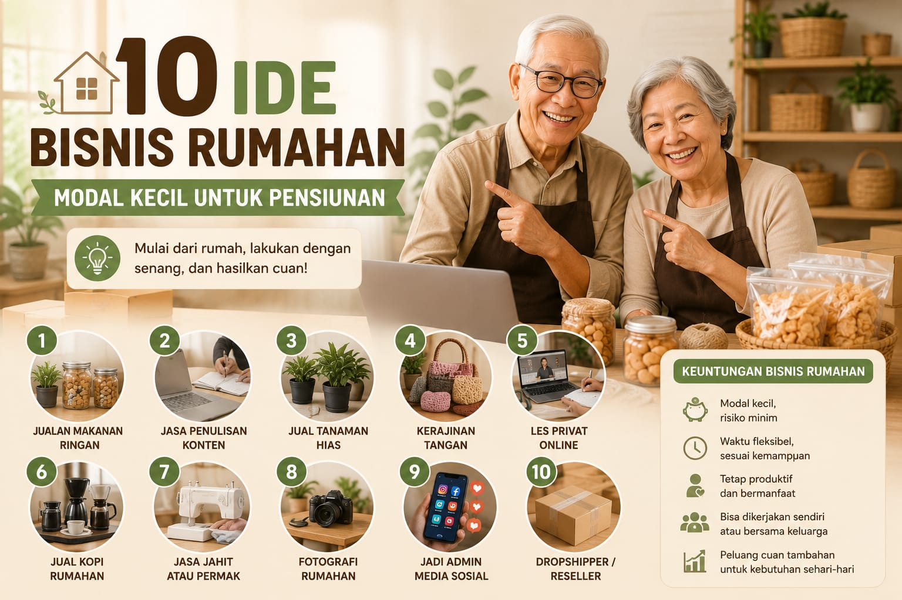
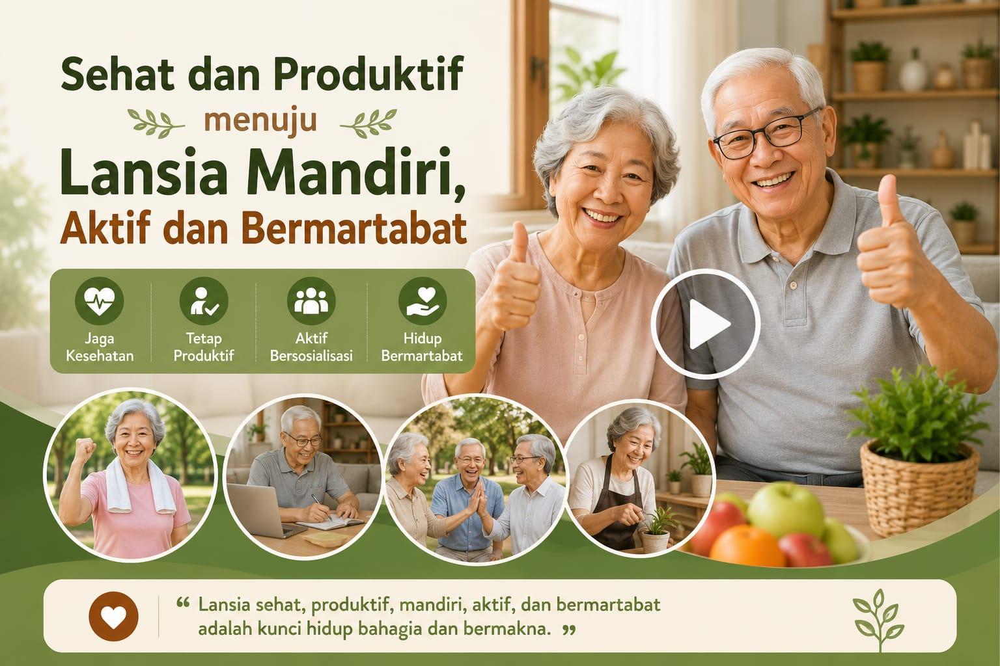
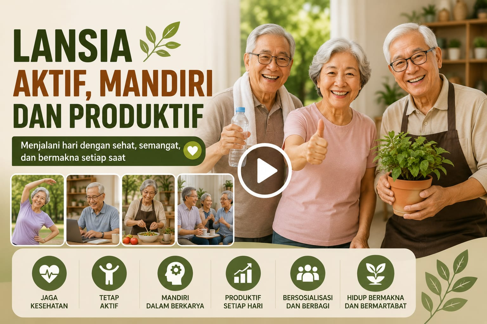

Pilih video untuk inspirasi aktivitas yang bermanfaat, serta panduan usaha rumahan dan praktik menganyam agar lansia tetap sehat dan mandiri.



Masa pensiun bukan akhir, melainkan awal dari perjalanan baru yang lebih bebas dan bermakna. Lansia tetap memiliki peluang besar untuk menjalankan usaha sederhana dari rumah.
Menjaga kesehatan fisik, mental, dan sosial sangat penting agar lansia tetap aktif dan memiliki kualitas hidup yang baik.
Kegiatan menganyam membantu lansia tetap aktif, produktif, dan mandiri secara ekonomi sekaligus melestarikan budaya lokal.
Dukungan pelatihan, pemasaran, dan penyediaan bahan baku sangat penting agar produk kerajinan lansia memiliki nilai jual yang lebih baik.
Lansia tetap dapat menjalani kehidupan yang mandiri dan produktif dengan memanfaatkan pengalaman serta waktu luang untuk usaha sederhana.